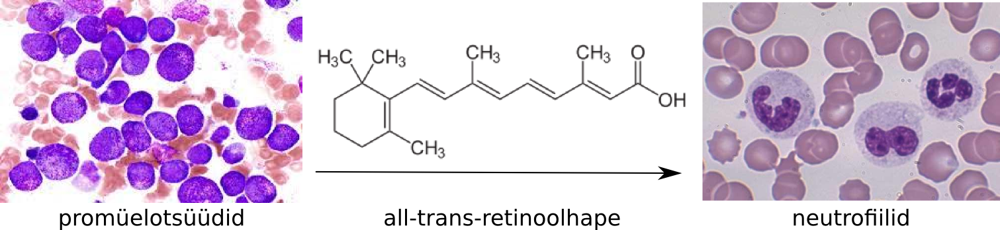

Vähiravimid
Onkobioloogia
Taavi Päll
vanemteadur, VTAK
Recap
Immunsüsteem ja vähk
Vähiravimid
Vähitrendid 20. sajandil
Kaks peamist trendi vähisuremuses
Vähi suremus peegeldab ravi efektiivsust
- Suremus osadesse kasvajatüüpidesse on vähenenud. Tingituna näiteks mao- ja maksakasvajate puhul paremast toiduohutusest (H. pylori) ja emakakaela (ja soole-) kasvajate puhul sõeltestimistest.
- Mitmed põhilised kasvajatüübid on jäänud resistentseks enamuse kasutatavate ravimeetodite suhtes.
- Enamus laialt kasutatavatest vähiravimitest on kasutusele võetud juba enne 1970-ndaid aastaid, mil puudus arusaam vähi molekulaarsetest alustest.
Esmased vähid ja 5 aasta suremus
Käärid vähi diagnoosimise ja eduka ravi vahel

Molekulaarne profileerimine aitab määrata ravi
HER2/ER/PR-negatiivne rinnavähk


Molekulaarne profileerimine
Difuusne suurerakuline lümfoom

Vähiravi strateegiad
Surm/apoptoos vs diferentseerumine
- Enamus mittekirurgilise vähiravi strateegiatest põhineb sellel, et ravi tagajärjel vähirakud lähevad apoptoosi.
- Alternatiiviks on vähirakkude diferentseeruma suunamine nii, et nad muutuksid post-mitootilisteks.

Äge promüelotsüütne leukeemia
- APL iseloomustab ebanormaalne mitte-küpsete granulotsüütide akumulatsioon ja on seotud retinoolhappe retseptori (RARα) translokatsiooniga (t(15;17)(q22;q12); PML-RAR).
- Algselt fataalne haigus (kirjeldati 1957) on hästi ravitav all-trans-retinoolhappega mis diferentseerib need vähirakud neutrofiilideks.
- all-trans-retinoolhape põhjustab diferentsatsiooni geene represseeriva PML-RAR valgu ubikvitineerimise ja proteasoomse lagundamise.

Ainult osa vähi valkudest sobivad ravimimärklauaks
- Madalmolekulaarsed ühendid omavad peamiselt inhibeerivat toimet valkudele millele nad seostuvad
- Tuumorsuppressorid ja genoomi korrashoiu eest vastutavad valgud ei sobi seega ravimi märklauaks: nende funktsiooni on vähirakkudes praktiliselt võimatu taastada.
- Onkogeenid ja neile signaalirajas järgnevad geenid on potentsiaalsed ravimimärklauad.

Onkogeen sõltuvus
- 'Onkogeen sõltuvus' (oncogene addiction): vaatamata tumorigeneesi käigus vähirakku akumuleerunud mitmete onkogeensetele mutatsioonidele, on vähirakk sõltuv kindla onkogeense valgu/raja aktivatsioonist.
- Kui see kriitiline rada 'kinni panna' siis vähk kollapseerub
- BCR-ABL fuusionvalk kroonilises müelotsüütses leukeemias on tundlik imatinib-le,
- HER2 on amplifitseerunud 25-30% rinnavähkides mis muudab need tundlikuks HER2-antikehadele (trastuzumab) ja inhibiitoritele (lapatinib),
- EGFR 10-20% mitte-väikserakulised kopsuvähid sisaldavad aktiveerivaid mutatsioone kinaasses domäänis ja on tundlikud inhibiitoritele gefitinib ja erlotinib-ile,
- BRAF V600E mutatsioon on 70% melanoomides, 40% kilpnäärmevähkides ja 20% mCRC mis muudab need tundlikuks nt. vemurafenib-ile.
Eksperimentaalsed näited onkogeen sõltuvusest
| Transgeenne onkogeen | vähi vastus |
|---|---|
| Vähi täielik regressioon peale transgeeni 'välja lülitamist' | |
| H-ras | melanoom kollapseerus |
| K-ras | kopsu adenokartsinoomi regressioon |
| bcr-abl | B-raku leukeemia regressioon |
| myc | T raku lümfoom, AML regressioon |
| fgf-7 | kopsu epiteeli hüperplaasia regressioon |
| SV40 LT | süljenäärme hüperplaasia regresseerus, kui transgeeni ekspresseeriti <4 kuud |
| Vähk jäi alles või relapseerus peale transgeeni 'välja lülitamist' | |
| SV40 LT | süljenäärme hüperplaasia tuli tagasi, kui transgeeni ekspresseeriti >4 kuud |
| neu | rinnanäärme adenokartsinoom relapseerus |
| myc või wnt | rinnanäärme adenokartsinoom jäi alles |
Druggable targets
Kinome tree

Vähiteraapias kasutatavad ravimiklassid
- Tsütotoksilised kemoterapeutikumid,
- toimivad kiirelt jagunevatele rakkudele (nt. CHOP kombo: Cyclophosphamide, Doxorubicin, Vincristine (Oncovin), Prednisolone).
- Hormoonravimid,
- blokeerivad hormoon-sõltuvate vähirakkude jagunemist ja põhjustavad vähirakkude surma (Lutron, Zytiga),
- Märklaud-ravimid,
- inhibeerivad spetsiifilisi onkovalke, millest vähirakud on sõltuvad (oncogene dependence).
Märklaud-ravimid
- Märklaud teraapias kasutatavad ravimid jagunevad kaheks peamiseks rühmaks
- madalmolekulaarsed inhibiitorid
- monoklonaalsed antikehad (rituximab,bevacizumab,trastuzumab,etc)
Madalmolekulaarsed inhibiitorid jagunevad omakorda mitmeks rühmaks, millest osad on:
- türosiin kinaasi inhibiitorid (imatinib mesylate,gefitinib,sorafenib, sunitinib,etc),
- seriin/treoniin kinaasi inhibiitorid (temsirolimus, everolimus,vemurafenib,etc),
- proteasoomi inhibiitorid (bortezomib).
Näiteid märklaud-ravimitest
Kinaasi inhibiitorid vähiravis
A total of 24 small-molecule kinase inhibitors have been approved for use as therapeutic agents, 17 of which are for cancer. In addition, four monoclonal antibodies acting on protein kinase targets have also been licensed for cancer therapy.
EGFR inhibiitorid
Chemical structures of epidermal growth factor receptor (EGFR) tyrosine kinase inhibitors and their molecular modes of binding to the target.

'Top 10 best-sellerit' vähiravimite hulgas 2013 (maailmas)
| Bränd | näidustus | märklaud | tüüp | müük | firma |
|---|---|---|---|---|---|
| Rituxan | mitte-Hodgkini lümfoom, CLL | CD20 | antikeha | $7.78B | Roche |
| Avastin | kolorektaal-, kopsu-, munasarja- ja ajuvähk | VEGF | antikeha | $6.75B | Roche |
| Herceptin | rinna-, mao- ja söögitoru vähk | HER2/neu | antikeha | $6.56B | Roche |
| Gleevec | leukeemia, GI vähk | BCR-ABL | väike kinaasi inhibiitor | $4.69B | Novartis |
| Alimta | kopsuvähk | puriini ja pürimidiini süntees | kemoterapeutikum | $2.7B | Eli Lilly |
| Velcade | multi müeloom | valkude lagundamine | proteasoomi inhibiitor | $2.6B | Takeda, J&J |
| Erbitux | käärsoole ja pea-kaela vähk | EGFR | antikeha | $1.87B | Merck, BMS |
| Lupron | eesnäärme ja munasarja vähk | gonatotropiin | hormoonravim | $1.73B | AbbVie, Sanofi |
| Zytiga | eesnäärme vähk | androgeen | hormoonravim | $1.7B | J&J |
| Revlimid | multi müeloom, mantelrakk lümfoom | ? | kemoterapeutikum | $1.09B | Celgene |